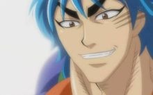
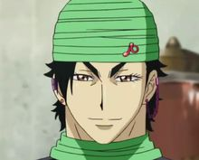
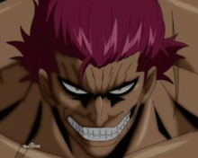
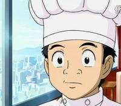

故事的主角，美食猎人四天王之一。左脸有三道爪痕，是超级大食客也是大酒豪，可以吃超过一百人份的餐点，一口气饮下酒精浓度高的龙舌兰和波本酒，嗅觉也是异于常人，他家本身就是个糖果屋，家里的各种设备器具（门把、杯子等）都可以拿来吃，虽然因为身体里面美食细胞的关系需要吃很多好东西维持生命，但是阿虏食量是巨大的，可可称他为“四天王中的大胃王”。全世界存在着约30万种食用材料，其中约有2%（约6000种）是被阿虏发掘的。威慑周遭的野兽时背后会浮现类似恶鬼的姿态，外表看似凶恶，但本性善良。“除非要吃这种食材，否则不会随便杀生”是阿虏绝对理念。掌刀、掌叉、钉拳是他的惯用武器，战斗时可以变成鬼神状态，用来恐吓对手以及增强自身实力。与美食会副料理长斯塔久是双胞胎兄弟，父母为美食神阿卡西亚与神之料理人弗洛泽。TV版已可以操控完整的美食细胞内的恶魔，漫画中表明其体内住着红蓝两只恶魔，蓝色的头发就是因为另一只隐藏恶魔的体现，后来经确认还有第三只恶魔的存在。体内红色恶魔为过去宇宙中曾被称为NO.1的孤高战士OGRE，性情虽然温和可一旦发起怒来则无人可敌。
美食猎人四天王之一。四天王中最偏食的人，长发彩发，体形修长。和其他的天王一样拥有一项感观能力——触觉。有巨大的猛兽力量，可以在方圆25米内将敌人打飞，也有无敌领域之称。甚至可以了解到生物的构成情况。触觉可以达到的范围，称为厨房餐厅。其能力的使用依靠头发，一根头发能承受250千克的重量，每根都为肉眼所看不见的0.1微米粗细。喜好美丽的东西，即使是食物尽管它多么美味，要是没有营养的话他是不会去吃的。生气/战斗时身后会出现帅气的巨大发魔。得意技“飞返”可以以数倍力道反弹对手的攻击，“发锁”可封锁对手行动，习得“食义”后头发总数变为100万根，射程范围为300米，头发甚至能侵入对手神经系统。在美食祭典中以绝招“魔王之发”吞噬了美食会副料理长多米洛特。体内恶魔为曾经将整个星球吞噬殆尽后重新吐出并以此支配整条银河的HAIR MONSTER。

美食猎人四天王之一。四天王中最体贴的男人，曾与阿虏一起修行，之后一段时间放弃美食猎人职业改为占卜师，为捕获河豚鲸被阿虏邀请帮忙，也因此从新开始美食猎人职业。浑身都是毒，并带有多种毒的抗体。处理食材的手法精湛。实力很强。人生高级菜单只剩下2种就能完成了。其可以将体内的水转化成毒液放出，可以随意调节毒的种类，如麻痹毒，猛毒等，甚至能合成王水。习得“食义”后体内毒储存量大幅度上升，能射出光速攻击的“毒枪”。他可以看出人类及动物身上发出的微量的电波，根据电波强弱来预测他人的未来，时而若一个人的死期快到，他便可以看出这个人的死相，这个技能主要用在占卜上，他的占卜正确率有97%。为人很讲义气，能使用威吓吓走周遭的野兽，背后会浮现类似幽灵的姿态。为了不让体内的毒失控所以必须保持清醒，因此绝不喝酒。因体内含有多种抗体经常被要求协助科学研究，为此十分讨厌媒体。用毒过度时头发会变成白色。体内恶魔为曾经使用致死的猛毒奴役过无数生物从而支配巨大惑星的POISON DEVIL。

美食猎人四天王之一。漫画123话出场，动画在52话美食的俘虏和海贼王的联合篇中从监狱里发射出音弹救了小松。四天王中的问题儿童。能分辨数10km外掉在地上的硬币声，拥有能够自由地操纵声音的震动来破坏所有东西的力量，破坏能力与卡路里储存量在四天王中首屈一指的家伙。因为使26种物种灭绝（皆为破坏生态圈的生物）而被囚禁在美食监狱，但是由于『美食会』的活动开始扩大，IGO打算将他放出来。不过IGO的酒杯法务局长说“真不想让他出狱，那家伙才是最不遵守秩序的家伙” 因为他的出狱世界将迎来混乱。不过因为他的出狱 世界上很多国家暂时停止与别国战争专注兵力于防守泽布拉。从而使许多饱受战乱之苦的人暂时可以得到安稳的生活，出狱要求是发现100种新食材，捕获500名罪犯，在漫画173中任务已经完成，原本没有人生菜单，被小松提醒后开始收集。据他自己说没有宠物，但在对战四兽时从“达摩仙人”处借来了“达摩骏马”做代步工具。体内恶魔为过去使用声音和腕力毁灭了无数星球的VOICE DEMON。

IGO 直属“HOTELGOURMET”的料理长，十星级大厨.29岁(漫画)，A型，个头矮小的青年，拥有优秀的专注力和俐落的刀法，梦想成为这时代一流的厨师。为了做出最好的食物，经常跟着阿虏去捕猎食材，心地善良，有很强烈的厨师魂。同时是漫画中必不可少的线索人物，技能吐槽。但很有潜力，他随身携带着做菜时用的刀子，刀子被小松认真的加工，刀身犹如被水浸湿的霞光的美丽，被四天王的可可、萨尼和泽布拉，以及美食会副料理长斯塔金也夸奖他的用心，甚至被世界第一的研磨师梅尔克赞叹：“看了这把刀子，我对刀子的主人感到了兴趣，这是多年没有的事情了”。后来刀子断了，二代梅尔克便用龙王【迪罗乌斯】的牙和断刀融合，打造了一把新菜刀，威力非凡，可震杀高级猛兽。虽经过可可的正确引导，但是他在仅仅7次的尝试中成功的取出了河豚鲸的毒袋。算是列入了世界中能处理掉河豚鲸毒袋的十一人之一。以仅仅不到1年的时间，凭他喝过的一滴世纪浓汤为线索，完成了节乃婆婆都需要花30年还没完成的世纪浓汤（因为节乃没有壁企鹅），引导他的“HOTELGOURMET”升级至十星级餐厅。因此成为了世界上相当受瞩目的厨师。漫画194话透露他学会烹调食林寺镇寺之宝【肥皂泡水果】。能力是简化特殊料理食材的步骤和聆听食材的声音。漫画209话成为【世界料理人排名】中第88位。寻找air时，心脏停止，后被确定为体内有美食细胞的恶魔。与人间界的厨师们料理了阿卡西亚的鱼料理ANOTHER。身边跟随着“璧企鹅”由由，是一只优秀的露营兽。